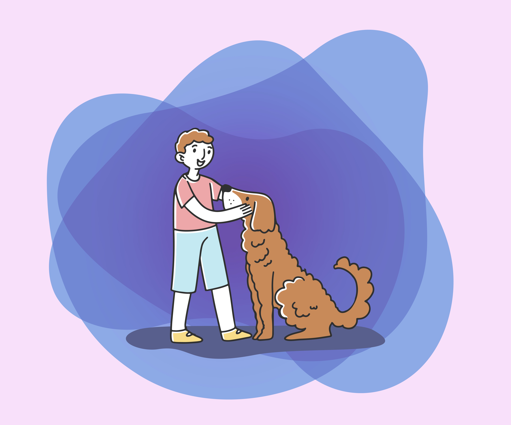
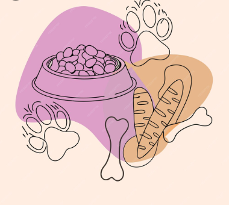
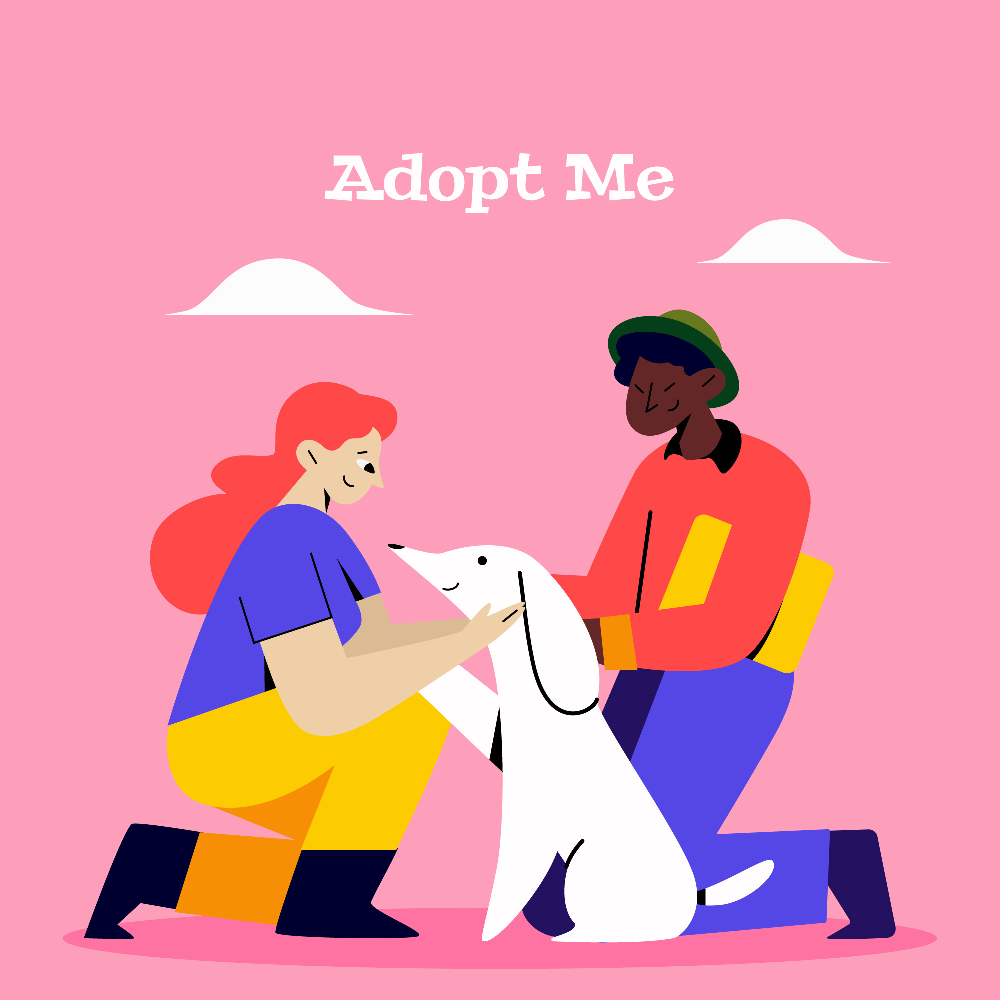
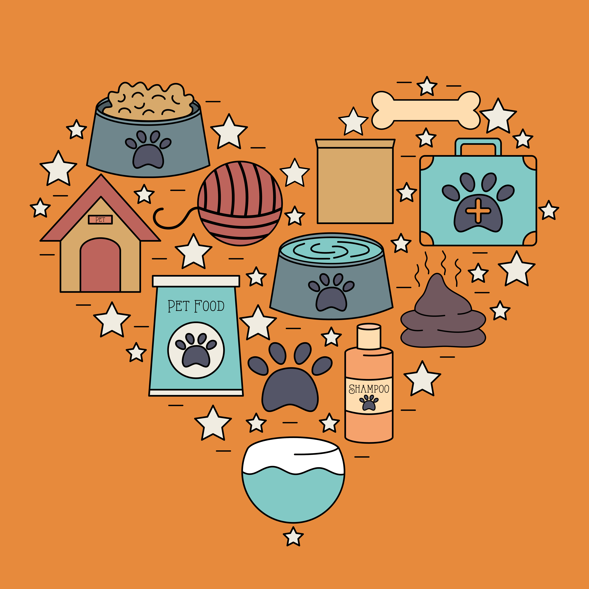

Registro
Registro
 Directorio
Directorio
 Estadísticas
Estadísticas
 Cuidados
Cuidados
Registra, cuida y conoce a los perros de tu comunidad
Ser dueño de un perro es una responsabilidad. Implica compromiso, tiempo, recursos y amor. El cuidado responsable beneficia al animal, a la familia y a la sociedad en general.


Antes de comprar, considera adoptar. Existen miles de perros abandonados o rescatados buscando un hogar. Adoptar es un acto de amor.

Consulta las siguientes páginas para obtener información oficial, normativas y recursos sobre el cuidado y bienestar animal en Chile.
ChileAtiende- Tenencia Responsable Servicio Agrícola y Ganadero (SAG) Ley 20.380 - Proteccion animal (Ley Chilena) Portal Gobierno de Chile (Buscador)